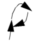

1
Layout Editor Basics
The Virtuoso Layout Suite is comprised of various types of tools which are described in the following documents.
- Virtuoso Interactive and Assisted Routing User Guide
- Virtuoso Design Rule Driven User Guide
- Virtuoso Parameterized Cell Reference
- Plotting Configuration User Guide
This chapter contains these topics:
- The Virtuoso Design Environment
- Layout XL Desktop
- Layout XL Window
- Working with Designs
- Command Function Basics
- Using Infix
- Menu Access Keys
- Using Bindkeys to Run Commands
- Setting Defaults
- Selecting the Workspace
- Using Environment Variables
- Setting Layout Editor Options
- Setting Layout Editor Options
- Display and Selection Controls
- Using the Technology File
- Layout Editor Strokes
- Using Forms
- Using Context-Sensitive Menus
- Performing Fast GDS Export Using XStream Out
- Using the Allegro PCB/Package Menu
The Virtuoso Design Environment
Basics of the Virtuoso Design Environment
The
-
Starting the Layout Editor
For information about how to start or quit the software, backup your work, or save your designs, see Getting Started with Virtuoso Software. -
About the Command Interpreter Window
For information about the CIW window, such as CIW menus, viewing commands, system responses, and typing in SKILL commands, see Using the Command Interpreter Window. -
Working with cellviews
For information about open and closing cellviews, and setting the default application, see Working with Cellviews. -
Working with Workspaces
For information about how to select or configure workspaces, see Getting Started with Workspaces and Working with Workspaces. -
The User Interface
For information about the user interface, see Interacting with the User Interface. -
Session Window and Workspace
For information about session windows, see Sample Session Window and Workspace.
Starting Layout XL
To use Layout XL, you must have access to one of the following design environments:
-
Virtuoso Physical Design Environment (
layoutPlus) -
Virtuoso Front to Back Design Environment (
virtuoso)
To start a design environment that includes the Layout XL software:
-
In a terminal window, move into the top-level directory of the design you want to edit.
The top-level directory is the directory that contains the library definitions (cds.lib) file for the design in question. The library definitions file defines the physical locations of all the reference and design libraries. Launching Layout XL loads the library initialization (libInit.il) files related to all these reference and design libraries. -
Type in the executable name of the design environment you want to launch; for example,
virtuoso.
The Command Interpreter Window (CIW) is displayed.
You use the CIW to launch applications on specific cellviews; perform general, non-tool-specific operations; enter SKILL commands; and display messages and warnings.
After you have started the design environment, you can then launch Layout XL from
- A schematic view, with or without a physical configuration view. See Starting Layout XL from a Schematic View.
- A layout view, with or without a connectivity reference. See Starting Layout XL from a Layout View.
- A physical configuration view. See Starting Layout XL from a Physical Configuration View.
Starting Layout XL from a Schematic View
A schematic cellview is the only valid connectivity reference for a Layout XL session. If you do not have a schematic view of your design, you first need to generate one.
When you start Layout XL from a schematic, you need to specify
- Whether to create a new layout view or use an existing one.
-
Whether the layout view is opened in the context of a new physical configuration view, an existing physical configuration view, or an automatic physical configuration view.
When Layout XL initializes, the schematic view is re-opened in the context of the physical configuration view being used for the session, which might be different from the configuration the schematic was using previously. The schematic window banner updates to indicate the name of the physical configuration view currently being used.
One effect of this is that you might need to re-extract the schematic view in order to take into account the settings in the physical configuration view. The system will inform you if this extraction is required.
If you close the Layout XL session by closing the layout window only, the schematic view is re-opened with no physical configuration context.
For more information on starting Layout XL from a schematic view, see
- Starting Layout XL with an Automatic Physical Configuration View
- Starting Layout XL with a New Physical Configuration View
- Starting Layout XL with an Existing Physical Configuration View
Generating a Schematic View from a CDL Netlist
If your connectivity reference is a CDL netlist, you cannot import it directly into Layout XL. You must first generate a schematic from the netlist.
To generate a schematic view from a CDL netlist,
- From the CIW, select File – Import – Spice.
- Set the Netlist Language to CDL and type the Netlist File name in the field provided.
- Click OK.
- Start Layout XL using one of the methods described.
For more information on importing CDL, see
Starting Layout XL with an Automatic Physical Configuration View
If you do not need to use any of the features provided by the Configure Physical Hierarchy command, you should launch Layout XL in Automatic mode. This ensures that Layout XL handles all operations related to the physical configuration view automatically.
To start Layout XL from a schematic view in Automatic mode,
-
From the CIW, choose File – Open.
The Open File form is displayed.
-
Specify the Library and Cell names, choose schematic from the View cyclic field and click OK.
The Virtuoso Schematic Editor L Editing window appears displaying the cellview you specified. -
From the schematic window, choose Launch – Layout XL.Layout XL appears in the Launch menu only if the Layout XL software is installed. If you do not see Layout XL in the menu, check with your system administrator.The Startup Option form is displayed.

- In the Layout group box, choose whether you want to create a new layout cellview or open an existing one.
-
In the Configuration group box, choose Automatic and then click OK.
One of the following happens.-
If you chose to create a new layout view, the New File form is displayed. The default view name is
layout.
Choose a Library name from the cyclic field and type the Cell and View names in the fields provided.
Click OK to create the new cellview.
The software automatically creates the new layout cellview and looks for an existing physical configuration view called eitherphysConfigorphysConfig_schName, which might have been created in a previous Layout XL session or when Converting Data to Use the IC 6.1 Layout XL Schema.
If neither view exists, it creates a new one calledphysConfigorphysConfig_schName. -
If you chose to open an existing layout view, the Open File form is displayed again.Specify the Library and Cell names and choose the View you want to open from the cyclic field.
 You cannot change setting for the Open with option in the Application group box, regardless of the value set for the maskLayoutDefaultApp environment variable.Click OK in the form to open the cellview.
You cannot change setting for the Open with option in the Application group box, regardless of the value set for the maskLayoutDefaultApp environment variable.Click OK in the form to open the cellview.
If there is an existing physical configuration view associated with the layout cellview, the software opens it in the background. If there is no existing physical configuration, the software creates a temporary, default one calledphysConfigorphysConfig_schName.
If the physical configuration view,physConfig, associated with a layout cellview is currently open and it is a temporary, default physical configuration view; the physical configuration view cannot be accessed by any other user at the same time. Therefore, if another user wants to open the same design in read-only mode, another temporary physical configuration view,physConfig_2,gets created. Likewise, if a third user now wants to open the same design in read-only mode, another temporary physical configuration view,physConfig_3gets created.
To conclude, for any incremental views of the same design that require the layout cellview to be opened in read-only mode, a new, temporary physical configuration view gets automatically generated and the name of each new physical configuration view increases incrementally.
The default Layout XL desktop configuration appears: the schematic window, the layout window, the CIW, and the Palette Assistant. For more information, see Layout XL Desktop.
The schematic view is re-opened in the context of the automatic physical configuration view, which might be different from the configuration it was using previously. The schematic window banner updates to indicate the name of the automatic physical configuration view.One effect of this is that you might need to re-extract the schematic view in order to take into account the settings in the physical configuration view. The system will inform you if this extraction is required. To avoid the need for re-extracting the schematic view, and to have the tool automatically copy the physconfig settings from the previous view, you must copy the cellview using the Library Manager. For more information, see Copying a View. -
If you chose to create a new layout view, the New File form is displayed.
The Configure Physical Hierarchy window is not displayed in Automatic mode. However, you can invoke it at any time by choosing Launch – Configure Physical Hierarchy from the layout window menu bar.
Starting Layout XL with a New Physical Configuration View
To start Layout XL from a schematic view in the context of a new physical configuration view,
-
Complete steps 1 through 4 described in Starting Layout XL with an Automatic Physical Configuration View.
The Startup Options form is displayed.
-
Choose whether you want to create a new layout cellview or open an existing one, make sure that the Configuration option is set to Create New, and then click OK.
One of the following happens.-
If you chose to create a new layout cellview, the New File form is displayed.Choose a Library from the cyclic field and type the Cell and View names in the fields provided.

-
If you chose to open an existing layout view, the Open File form is displayed again.Specify the Library and Cell names and choose the View you want to open from the cyclic field.You cannot change setting for the Open with option in the Application group box, regardless of the value set for the maskLayoutDefaultApp environment variable.
-
If you chose to create a new layout cellview, the New File form is displayed.
-
Click OK to create the new layout cellview or to open an existing one.
The Create Physical Configuration View form is displayed.
The layout Library and Cell names are seeded automatically.
-
Specify the View Name for the physical configuration view.
To seed the new view with predefined values, check Use Template and either choose one of the predefined templates from the drop-down list or specify a file stored in another location. If you do not specify a template, the corresponding environment variables are used to obtain initial values.
Check the Open CPH check box to open the Configure Physical Hierarchy window automatically. -
Click OK.
The default Layout XL Desktop configuration appears: the schematic window, the layout window, the CIW, and the Palette assistant.
The schematic view is re-opened in the context of the new physical configuration view, which might be different from the configuration it was using previously. The schematic window banner updates to indicate the name of the new physical configuration view. The Configure Physical Hierarchy window opens to display the physical configuration view you created.You might need to re-extract the schematic view in order to take into account the the settings in the physical configuration view. The system will inform you if this extraction is required.If Layout XL does not initialize and instead you see the Layout XL Constraint Group Setting dialog, see Specifying the Constraint Group.
Starting Layout XL with an Existing Physical Configuration View
To start Layout XL from a schematic view in the context of an existing configuration view,
-
Complete steps 1 through 4 described in Starting Layout XL with an Automatic Physical Configuration View.
The Startup Option form is displayed. -
Choose whether you want to create a new layout cellview or open an existing one and make sure that the Configuration option is set to Open Existing.

-
Click OK.
One of the following happens.-
If you chose to create a new layout cellview, the New File form is displayed.Choose a Library from the cyclic field and type the Cell and View names in the fields provided.
-
If you chose to open an existing layout view, the Open File form is displayed again.Specify the Library and Cell names and choose the View you want to open from the cyclic field.You cannot change setting for the Open with option in the Application group box, regardless of the value set for the maskLayoutDefaultApp environment variable.
-
If you chose to create a new layout cellview, the New File form is displayed.
-
Click OK to create the new layout cellview or to open an existing one.
The Open Physical Configuration View form is displayed.
- Specify the Library, Cell, and View names and check the Open CPH box to open the Configure Physical Hierarchy window automatically.
-
Click OK.
The default Layout XL desktop configuration appears: the schematic window, the layout window, the CIW, and the Palette assistant.
The schematic view is re-opened in the context of the specified physical configuration view, which might be different from the configuration it was using previously. The schematic window banner updates to indicate the name of the specified physical configuration view and the Configure Physical Hierarchy window opens.
Starting Layout XL from a Layout View
To start Layout XL from a layout view,
-
From the CIW, choose File – Open.
The Open File form is displayed. - Specify the Library and Cell names and choose schematic from the View cyclic field.
-
Click OK.
The Virtuoso Layout Suite L Editing window appears displaying the cellview you specified. -
From the layout window, choose Launch – Layout XL.
The default Layout XL Desktop configuration appears: the schematic window, the layout window, the CIW, and the Palette assistant. The schematic view is opened in the context of the physical configuration view being used for the session, which might be different from the configuration it uses when it is opened standalone.You might need to re-extract the schematic view in order to take into account the the settings in the physical configuration view. The system will inform you if this extraction is required.By default, the schematic editor launches in the XL mode. To launch the editor in the L mode instead, select the Schematics L option for the Open with field on the Connectivity form.The corresponding environment variable is lxSchematicDefaultApp.
Notes
- Layout XL appears in the Launch menu only if the Layout XL software is installed. If you do not see Layout XL, check with your system administrator.
Starting Layout XL from a Physical Configuration View
To start Layout XL directly from a physical configuration view,
-
From the CIW, choose File – Open.
The Open File form is displayed. - Specify the Library and Cell names and choose physConfig from the View cyclic field.
-
Click OK.
The Open Configuration or Top Cellview form is displayed.

-
Set both Configuration and Top Cellview to yes to open both the physical configuration view and the schematic view.
envSetVal("ddserv.he" "hierEditor" 'boolean t)
envSetVal("ddserv.he" "schEditor" 'boolean t)
-
Click OK.
The schematic view is opened in a Virtuoso Schematic Editor window and the Configure Physical Hierarchy window is displayed showing the physical configuration view you specified. The system checks out a Layout XL license if there is not one currently checked out. - Start Layout XL as detailed in Starting Layout XL from a Schematic View.
Automatic Constraint Transfer during Layout XL Startup
On startup, Layout XL transfers all the constraints defined in the schematic view to the layout view; correctly mapping the constraints and their members between the two views.
Constraints in the schematic are transferred to the top-level layout view. Constraints that have been created or changed in the schematic but not yet saved are also transferred.
Device correspondence information is maintained during the transfer. and physical name mappings are tracked and constraints are updated appropriately to take account of folded instances in the layout.
Specifying the Constraint Group
The Layout XL connectivity extractor requires a constraint group containing information on valid layers, valid vias, and error layers. You specify the default constraint group using a layout environment variable called
If the specified constraint group does not contain the information required by Layout XL, during initialization the software pops up a dialog inviting you to either:
- Choose the constraint group you want from the ones specified in the technology file.
-
Launch XL with the connectivity extractor disabled.

Default Parameter and Property Names
Virtuoso Layout Suite XL requires the following parameter and property names to be reserved for correctly setting up the environment.
| Parameter or Property name | Reserved name used for Layout XL set up |
- Parameter name set at the instance level, if an instance override is set
- Parameter name defined at the cell level, if an instance override is not set
- The first parameter name defined in CDF (Common Description Format, if different names are set at the instance and cell levels
Layout XL Desktop
When you start Layout XL, the four windows are rearranged into the default window configuration on your desktop. The layout window is on the right with “Virtuoso® Layout Suite XL...” in the banner; the schematic that corresponds to the layout is in the schematic window on the left. The Palette assistant and the command interpreter window (CIW) are placed to the left and bottom of the screen respectively.
You can move, resize, and iconify any of the four windows.
Customizing the Desktop
You can save and reuse your customized desktop layout in one of the following ways.
-
Using the Options – Save Defaults command from the CIW.
When you use this command, Layout XL saves the size and position of the schematic and layout windows as a property on the current layout cellview. It also sends the Palette assistant and CIW window size and location information to the.cdsenvfile.
When you reopen the layout and schematic cellviews, they appear in the same configuration as they had when you used the Save Defaults command.
For more information, see Saving and Recalling Default Settings in the Virtuoso Design Environment User Guide. -
By adding the appropriate environment variables to your
.cdsenvfile; for example, to prevent Layout XL from rearranging or resizing windows, add the following line to the.cdsenv file:envSetVal("layoutXL" "autoArrange" 'boolean nil)
.cdsenv (for example, .envFileName), you can restore the settings by adding the following line to your .cdsinit file or typing it in the CIW.envLoadFile("layoutXL" ".envFileName")
Layout XL Window
The Layout XL window comprises a menu bar, a canvas, in which you can display and manipulate your design graphically, and a number of toolbars and dockable assistants to help you with your design tasks. This guide describes only those toolbars and assistants as they relate to Layout XL design tasks.
- For information on the individual components of the schematic window, see the Virtuoso Schematic Editor L User Guide.
- For detailed information on the new design environment, see the Virtuoso Design Environment User Guide.
- For an overview of the connectivity-driven features supported by Layout XL and a lab database and workshop instructions to help you explore how these features can bring productivity gains for a design, view or download the rapid adoption kit, Introduction to Connectivity-Driven Design in VLS XL.
Virtuoso Layout Launch Menu
The Virtuoso Layout launch menu enables you to launch the applications listed below:
- ADE L
- ADE XL
- ADE GXL
- ADE Explorer
- ADE Assembler
- Layout XL
- Layout EXL
- Pcell IDE
- Configure Physical Hierarchy
- Plugins
Using the Library Browser
For information about the Library Browser, see the
Cadence Licensing
For startup information such as setting the installation path, executable, and initialization files, see the
For information about how to run 64-bit software, see
Working with Designs
- Opening a Design
- Making a Design Read Only
- Making a Design Editable
- Saving a Design
- Closing a Design
Opening a Design
Opening a New Design
To open a new cellview from the layout editor:
-
Choose File – New from an editor window or the CIW.
The New File form appears.
- From the Library drop-down list, choose the library in which to store the new cellview.
- In the Cell field, enter a new cell name.
- In the View field, enter a name for the new cellview.
- In the Type drop-down list, choose the view type, such as layout, that is to be associated with the new cellview.
- In the Open with drop-down list, choose the application that the new cellview should automatically open with.
- Optionally, select the Always use this application for this type of file check box to associate the selection made in the Open with field with the current View type selected. This will save you in future having to select what application should be opened with a selected cellview Type.
- The Library path file field displays the location where the new cellview will be stored.
- Choose whether you want to open the new cellview in a new tab, the current tab, or in a new window.
- Click OK.
Opening an Existing Cellview
To open an existing cellview in the layout editor:
-
Choose File – Open from an editor window or the CIW.
The Open File form appears.
- In the Library drop-down list, choose the library that contains the cellview you want to open.
- In the Cell field, specify a cell name using one of the following methods:
-
Choose the View to be open from the drop-down list.
The Type field will update to display the type of view of the selected cell view.If a thumbnail of the selected cellview is available, it will be displayed in the Open File form as an aid to selection. If no thumbnail is available, the space will be blank. For more information about the thumbnail of a cellview, see Thumbnail Images of Cellviews in the Cadence Library Manager User Guide. - From the Open with down-down list, choose the application that the cellview should open with.
- Optionally, select the Always use this application for this type of file check box to associate the selection made in the Open with drop-down list with the current View type selected. This will save you in future having to select what application should be opened with a selected cellview Type.
- Choose to open the cellview in edit or read mode.
- The Library path file field displays the location where the cellview is stored.
- Choose to open the cellview in a new tab in the current session window, the current tab in the current session window, or a new window in a new session.
- Click OK.
For more information about cellview tabs, see
Opening an Existing Cellview
To open an existing cellview in the layout editor:
-
Choose File – Open from an editor window or the CIW.
The Open File form appears.
- In the Library drop-down list, choose the library that contains the cellview you want to open.
- In the Cell field, specify a cell name using one of the following methods:
-
Choose the View to be open from the drop-down list.
The Type field will update to display the type of view of the selected cell view.If a thumbnail of the selected cellview is available, it will be displayed in the Open File form as an aid to selection. If no thumbnail is available, the space will be blank. For more information about the thumbnail of a cellview, see Thumbnail Images of Cellviews in the Cadence Library Manager User Guide. - From the Open with down-down list, choose the application that the cellview should open with.
- Optionally, select the Always use this application for this type of file check box to associate the selection made in the Open with drop-down list with the current View type selected. This will save you in future having to select what application should be opened with a selected cellview Type.
- Choose to open the cellview in edit or read mode.
- The Library path file field displays the location where the cellview is stored.
- Choose to open the cellview in a new tab in the current session window, the current tab in the current session window, or a new window in a new session.
- Click OK.
For more information about cellview tabs, see
Making a Design Read Only
To make a design open in read-only mode,
If you have made any changes to the current cellview but have not saved them, the Change Edit Mode dialog box appears and prompts you to either save the changes or discard them.
After you click Yes or No, the mode becomes read-only. Yes saves edits, and No discards your edits. You can click Cancel to let the design remain in edit mode.
This command toggles with File – Make Editable.
Making a Design Editable
To make a design opened in read-only mode, editable,
If you have made no change in read-only mode, the design will switch to the editable mode, and no pop-up window will be displayed.
However, if you have made any changes in read-only mode, and reopen the design in edit mode, then:
- If the design has changed on disk either because of data management, or because it was edited and saved by another user, a warning message will be displayed in CIW indicating that the design has been refreshed. As a result, changes you have made in read-only mode will be lost.
- If the design has not changed on disk, a dialog box will be displayed informing you that you have changed the design in read-only mode, and you can choose Yes to keep the changes or No to discard them.
Saving a Design
To save a design with a different name:
-
Choose File – Save a Copy.
The Save a Copy form appears.
- Select a library from the first drop-down list at the bottom of the form. This should be the library in which you want to save the cellview.
- Specify a new cell name in the text field at the bottom of the form.
- Select the cellview type from the last drop-down list.
- Select the Open Saved Copy check box to open a saved copy of the design.
- Select read or edit from the Open for field.
- Select the location where you want to open the design from the Open in field, new tab, current tab, or new window.
- Click OK.
Thumbnail images, where they have been set up in the current view for pre-viewing cellviews, are updated automatically when you choose to Save or Save a Copy of that cellview. This happens through an automatic call to the hiGenerateThumbnails SKILL command. To disable the auto-generation of thumbnails, you can set the following environment variable in the CIW:
envSetVal(“ui.thumbnails” “generate” `boolean nil)
For more information about thumbnails, see
To save hierarchical instances, which have been modified without running the Edit In Place or Descend Edit command, in a design:
For more information about the Edit In Place and Descend Edit commands, see Working With Hierarchical Designs
Closing a Design
-
Choose File – Close.
If you edited the current cellview since the last time you saved your data, the Save Changes dialog box appears and prompts you to save the changes, discard them, or cancel the close operation.
- Yes saves your edits and closes the window.
-
No discards your edits and closes the window.Use the discardCVEditOnWindowClose environment variable to preserve the edits in the memory when you click No.
- Cancel cancels the Close command but does not discard the changes. It returns you to the cellview you were editing.
Command Function Basics
Starting Commands
To start Layout Suite commands you can,
- Choose a command from pull down menus
- Click a toolbar icon
- Choose a command from the layout editor context-sensitive menu: See Using Context-Sensitive Menus.
- Press a bindkey associated with a Command See Using Bindkeys to Run Commands.
- Draw a stroke in the design window: See Layout Editor Strokes.
Canceling Commands
To cancel a command without changing your data, or to stop a command that automatically repeats, press Esc or click Cancel on the form.
Undoing Commands
To undo a command, choose Edit – Undo or Press u.
You can undo up to 128 previous commands. You can set the undo limit to either 0 or 128. Set the number of commands by choosing Options – User Preferences in the Command Interpreter Window (CIW).
The system keeps an undo history (check points) in a single, global stack. Therefore, when you choose Undo in a cellview, the last edit made to any open cellview is undone.
Redoing Commands
To reinstate a change you canceled with Undo, choose Edit – Redo or press Shift-u.
Repeating Commands
Many layout editor commands automatically repeat. For example, each time you finish drawing one rectangle, the Create Rectangle command prompts you to draw another one.
By default, all commands on the Create menu and the Create Measurement command are set to repeat. To set the automatic repeat (on or off), choose Options – Editor and set Repeat Commands on (or off).
Nesting Commands
You can pause before completing one command to perform a second command. This is called nesting a command. For example, if you move an object and then zoom out, the zoom command would be nested, allowing you to use another command such as moving another object.
You can nest any display command. You cannot nest edit or create commands. As exceptions, edit and create commands can be nested within the Modify Corner and Size commands.
You can nest up to 20 commands. To set the number of commands you can nest, choose Options – User Preferences from the CIW and set the Nest Limit field to the number you want.
Discarding All Edits
The Discard Edits Form ignores all edits you made since the last time you saved.
To cancel your edits, choose File – Discard Edits. A Discard Edits dialog box appears and asks you to confirm that you want to discard your edits.
Handling Unexpected Results While Using Commands
-
The Command Starts Before I Enter Points
If you press a bindkey to start a command and the command seems to start before you click a point, infix mode is probably on. When infix is on, any command you start with a bindkey uses the current pointer location as its first point. -
Stopping a Command
In either case, cancel the command by pressingEscapeor click Cancel on the form.
It is not always necessary to cancel a repeating command. If you are running a repeating command and then start a nonrepeating command, the repeating command pauses while the new command runs. After you are finished with the nonrepeating command, the repeating command continues. Also, if you start another repeating command, the first repeating command stops. -
The Command Does Not Repeat and It Should
By default, editing commands repeat automatically only if you first choose the command, then select the object.
Commands do not repeat if you first select the object, then choose the command.
If you chose an editing command before selecting an object, and the command still does not repeat, one of the following might be the cause: -
An object is selected that you cannot see.
Look at the number next to Select in the Status Banner or the Status Toolbar to see if one or more objects is selected. For example, if one object is selected the Status Banner or the Status Toolbar display:
Zoom out the cellview so you can see all objects.Select: 1 -
The Repeat Commands setting for the editor has been turned off.
To turn the Repeat Commands setting on, choose Options – Editor and in the Layout Editor Options form, set Repeat Commands on.
Using Infix
You can set the layout editor to automatically use the current pointer location as the starting point whenever you start commands with bindkeys. This is called infix mode.
To set infix mode on or off, from the CIW, choose Options – User Preferences and turn the Infix button on or off.
Menu Access Keys
Menu access keys provide keyboard access to application menus and the functionality they contain without the need to use mouse selections. For example, if you press Alt-F on your keyboard, the software displays the contents of the File banner menu.
The menu access key for an Layout XL menu, submenu, or command is the underlined letter in the menu command label. For example, to display the
-
With the cursor in the Layout XL window, press
Alt-Oto display the contents of the Options banner menu. -
Press
Alt-Xto display the Layout XL Options form.
Using Bindkeys to Run Commands
Many layout editor commands can be run by using bindkeys. If the bindkey settings are loaded, the bindkeys appear to the right of the command name on the menu. The physical representation of the bindkey settings is covered in Bindkeys in Virtuoso Layout Suite.
There is a list of default bindkeys for Layout XL at the following location.
your_install_dir/samples/local/lxBindKeys.il
Where your_install_dir is the directory in which you store Cadence software.
For information about bindkeys, see
Default Bindkeys Defined for Layout XL
There is a list of default bindkeys for Layout XL at the following location.
your_install_dir/samples/local/lxBindKeys.il
Where your_install_dir is the directory in which you store Cadence software.
This file defines the following bindkeys for Layout XL.
| Key | SKILL | Menu |
|---|---|---|
|
Options – Layout XL – General tab; Constraint-aware editing option |
||
|
|
||
Displaying Bindkeys
To display the list of bindkeys for Layout XL,
-
From the CIW menu bar, choose Options – Bindkeys.
The Bindkey Editor form is displayed.
-
In the Application Tree, select the application whose bindkeys you want to view.
- Optionally, use the Search field to filter the bindkey listing.
- To view the bindkey settings for the currently selected application, either:
Loading Bindkeys
To load a file of bindkey definitions every time you run Layout XL,
-
Add the following line to your
.cdsinitfile.load(prependInstallPath("
For example, the following line loads the list of default bindkeys for Layout XL.path_to_bindkey_file"))load(prependInstallPath("samples/local/lxBindKeys.il"))
Setting Defaults
Before you can start working in the layout editor, several startup files must be initiated. Some of the things these files do include setting up your environment, pointing to libraries, and defining your plotters.
Startup Files
The layout editor uses the following startup files:
| File Name | Refer To |
Setting Default Values with Menu Commands
The following layout editor and DFII commands and forms control most of the default values for your design environment:
| Form Name | Description |
|
Controls your Cadence software environment. These settings affect all Cadence applications, not just the layout editor. |
|
Setting the Default Application
You can automate the launching of an application when a cellview is opened rather than choosing the application from Launch menu each time.
For information, see
Setting the Background Color of the Layout Editor Window
You can change the background color of the layout editor window using the environment variable, defaultEditorBackgroundColor.
You can change the background color of the current window using the following command:
hiGetCurrentWindow()->backgroundColor = "red"
Selecting the Workspace
You can rearrange the canvas, assistants, and toolbars to suit your individual work preferences. A customized configuration of the toolbars and assistants makes a workspace.
Layout XL ships with the following default workspaces:
Basic
The Basic workspace, shows the canvas, the selected toolbars, the Palette, Navigator, and Property Editor assistants. Notice that the Navigator and the Property Editor assistants are available as tabs on the left panel.
CAS
The CAS workspace, shows the CAS tab in the Annotation Browser assistant, in addition to displaying the canvas and the selected toolbars.
Classic
The Classic workspace (the default), shows the Palette assistant in addition to the canvas and the selected toolbars.

Constraints
The Constraints workspace, shows the canvas, the selected toolbars, and the Palette, Navigator, Property Editor, and the Constraint Manager assistants. Notice that the Navigator and the Property Editor assistants are available as tabs in the left panel.
EAD
The EAD workspace, shows the canvas, the selected toolbars, and the
Floorplan
The Floorplan workspace, shows the canvas, the toolbars, and the Navigator, Property Editor, and the Annotation Browser assistants.
Modgen
The Modgen workspace, shows the canvas, the toolbars, and the Navigator, Property Editor, and the Constraint Manager assistants.
Multipatterning
The Multipatterning workspace, shows the canvas, the toolbars, the
VSR
The VSR workspace, shows the canvas, the toolbars, and the Navigator,
Using Environment Variables
For information about how to set environment variables and a list of graphic and layout editor variables, see
Setting Layout Editor Options
To open the Layer Editor Options form, choose Options – Editor. You can set the options in this form to define your layout editing environment settings. For information about various options in this form, see:
Display and Selection Controls
This section describes how to customize the display settings for the layout canvas and explains the selection and cross-selection mechanisms in Layout XL.
Setting Display Colors
You can change the colors and characteristics of the display layers that Layout XL uses for the following functionality.
-
The Annotation Browser assistant uses the
y0throughy9layers to show flight lines.
For more information, see Highlighting Incomplete Nets. -
The XL Probe command uses the (
hilite drawing) through (hilite drawing9) layers to probe pins, nets, and devices.
For more information, see Highlighting Probes. -
The Generate Selected From Source command uses the (
hilite drawing1) layer to highlight schematic symbols. -
The Check Against Source command uses the (
hilite drawing9) entry layer to identify missing devices. -
The Highlight command for placement constraints uses the (
annotate drawing3) entry layer to highlight in the layout the components bound by a particular placement constraint.
Editing Entry Layers
- In the CIW, choose Tools – Display Resource Manager.
-
In the Display Resources Tool Box, click Edit.
The Display Resource Editor window appears.
For more information, see Display Resource Editor (DRE) Form in the Virtuoso Technology Data User Guide. -
Select All to see all the available layers.
- In the Layers column, choose the name of the layer to change.
- Turn on the Fill Style, Fill Color, Outline Color, Stipple, and Line Style options you want to use for that layer.
-
Click Apply.
The next time you use a command that displays the layer you changed, the color or pattern changes in the design window.
Highlighting Incomplete Nets
To highlight incomplete connections with flight lines, Layout XL cycles through the y0 through y9 layers.

Layout XL displays the flight lines of each net in a different color. If there are more than 10 flight lines, the cycle is repeated unless you have specified certain layers for specific nets.
When assigning new colors to the flight lines:
- Use colors that do not closely resemble each other or the colors you use for paths and components.
- Avoid solid fill so you can see what is underneath.
Highlighting Probes
Layout XL uses the (hilite drawing) through (hilite drawing9) entry layers for probes, which identify equivalent design elements on the schematic and the layout.

The Check Against Source command uses the (hilite drawing9) layer to identify components in the schematic that are not in the layout (and vice versa).
If you change the colors of the (hilite drawing) layers,
- Use thick lines so that you can see device pins.
-
Use bright colors to make probes and highlights easy to find.
Selecting Objects in Layout XL
You can select objects either before or after you start a command.
Preselect Mode
If you select objects before starting a command, the command is said to be operating in preselect mode. In preselect mode, the command operates only on the objects that were selected when the command was started. When the command is completed, the selected objects remain in the selected set.
- Editing commands do not automatically repeat, even if the Repeat Commands option is switched on in the Layout Editor Options form.
- Some editing commands prompt you for a starting point, called the reference point, for the edit.
Postselect Mode
If you select the command and then the objects, the command is said to be operating in postselect mode. In postselect mode, you make your selection within the command and when the command is completed, nothing is selected.
- Editing commands automatically repeat if Repeat Commands is on (the default).
- Editing commands do not necessarily prompt you for a reference point. If you click to select the first object, the editor uses that point as the reference point.
Deselecting Objects in Layout XL
- To deselect an object:
- Invoke the (De)Select Under Cursor context menu and from the De(select) submenu, hover over the object you want to deselect. The object gets highlighted.
For more information on object selection, see
Viewing Multiple Cellviews in Layout XL
You can open more than one pair of schematic-layout windows in Layout XL and work on each pair independently.
However, when you open multiple cellviews in Layout XL, the second and subsequent sets of windows are not automatically configured in the same way as the first set.
- If you open a schematic and two copies of the same layout, the XL Probe command and the commands in the Check and Update submenus apply to both layouts.
- If you open a schematic and two different layouts, the XL Probe command and the commands in the Check and Update submenus apply only to the layout from which you selected the command.
Displaying Options Forms Automatically
Options forms let you change command settings while you are running commands. Many options forms do not appear automatically if you have Options Displayed When Commands Start turned off in the Options - User Preferences in the CIW. In this situation, you must press F3 to see the command forms.
Printing to the Command Interpreter Window
To print process information to the CIW instead of to a separate Layout XL Info window,
-
Add the following line to your
.cdsenvfile or type it in the CIWenvSetVal("layoutXL" "infoWindow" 'boolean nil)
Using the Technology File
Each design library must be associated with a technology library compiled from a technology file. The technology file defines
- Design layers and their properties
- Constraint and constraint groups
- Via definitions
- Site definitions
- Technology devices
For complete details about how to create and edit technology files, refer to the following:
The layout editor requires the technology file to contain complete definitions of the layers used in your design.
Layout Editor Strokes
A stroke is a unique shape you draw in a cellview by pressing and holding the right mouse button. Cadence ships a set of predefined strokes for the layout editor that you can load.
Loading and Unloading Strokes
To use the predefined layout editor strokes, you must first load them.
-
Type the following in the text line of the CIW:
load(prependInstallPath( "etc/sted/stroke.il")) load(prependInstallPath( "etc/sted/defstrokes.il")) hiLoadStrokeFile("def.strokes" "Layout")
where, prependInstallPath is a SKILL function that uses the value set for the UNIX environment variable CDS_INST_DIR (it usually points to install_dir/tools/dfII).
The stroke.il file defines mouse key bindings and the applications that recognize strokes. The defstrokes.il file lists the Cadence® SKILL language functions used by the predefined strokes. The def.strokes file defines the stroke shapes.
You can also add these commands to your .cdsinit file, so the strokes are loaded whenever you start the Cadence software.
- Quit the current session of the Cadence software and restart the software.
-
Remove the load strokes commands from your
.cdsinitfile, if you have added them to that file.
Drawing Strokes
To start a command with a stroke, press right and draw one of the following strokes:
| Stroke | Drawing Direction | Command | Stroke | Drawing Direction | Command | |
|---|---|---|---|---|---|---|
 |
 |
 |
|
|||
|
|
|
|
|
|||
 |
 |
 |
|
|||
 |
 |
|
|
|||
|
|

|
|
|
|||
 |
|
|
|
|||
 |
 |
|
|
The arrows show the direction in which you draw the strokes. There are two ways to start Zoom In with strokes.
Using Forms
A form is a window that appears when you use a command.
Displaying Forms
There are two ways to display forms, depending on whether the command has a standard form or an options form.
-
Standard forms
These forms have three dots (...) following the command and appear automatically. -
Option forms
These forms do not appear automatically. You can display an options form by double-clicking right mouse button or pressingF3when a command is active.
To set options forms so they display automatically whenever you choose a command,
- From the CIW, choose Options – User Preferences and turn on the Options Displayed When Commands Start button.
Using Form Buttons
The buttons on a standard form work as follows:
| Button | Description |
|
Completes the command and keeps the command active and the form on the screen. |
|
The buttons on an options form work as follows:
| Button | Description |
Using Context-Sensitive Menus
Context-sensitive menus display context-sensitive options, based on the object under the pointer at the time of right-click. Context-sensitive menus provide a quick access to object-specific commands.
For example, the layout editor context-sensitive menu lets you start a few commonly used layout commands. Right-click at any free space in the design canvas to display the Layout context-sensitive menu and select the required command.
If you use Edit In Place, Descend Edit, or Descend Read commands, the Layout context-sensitive menu also displays the Return command to ascend the hierarchy.

If multiple objects of different types are selected when you right-click, the Multiple context-sensitive menu appears, which allows you to perform basic editing operations on all the objects selected.

However, if all selected objects are of same type, the object-specific, context-sensitive menu appears. For example, if you select a group of rectangles and right-click, the Shape context-sensitive menu appears.
Performing Fast GDS Export Using XStream Out
To perform fast GDS export using XStream Out in the layout editor window,
Selecting this option will let you export the currently open design using XStream Out. For more information see Design Data Translator's Reference guide.
Using the Allegro PCB/Package Menu
In Virtuoso Layout Suite L, the Allegro PCB/Package menu is available that enables you to work on System-in-Package (SIP).
Return to top